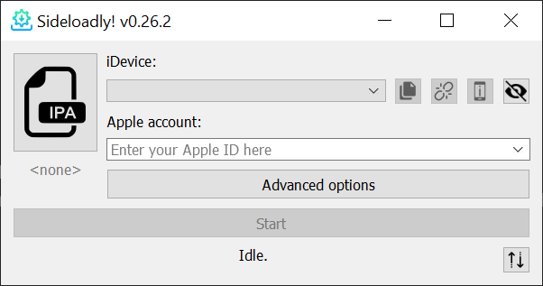
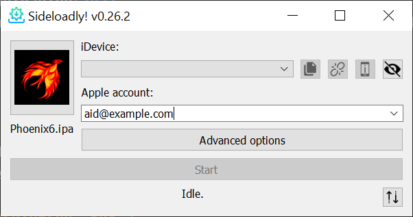
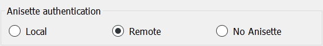
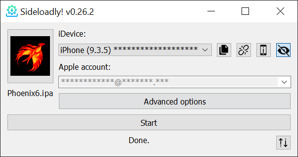
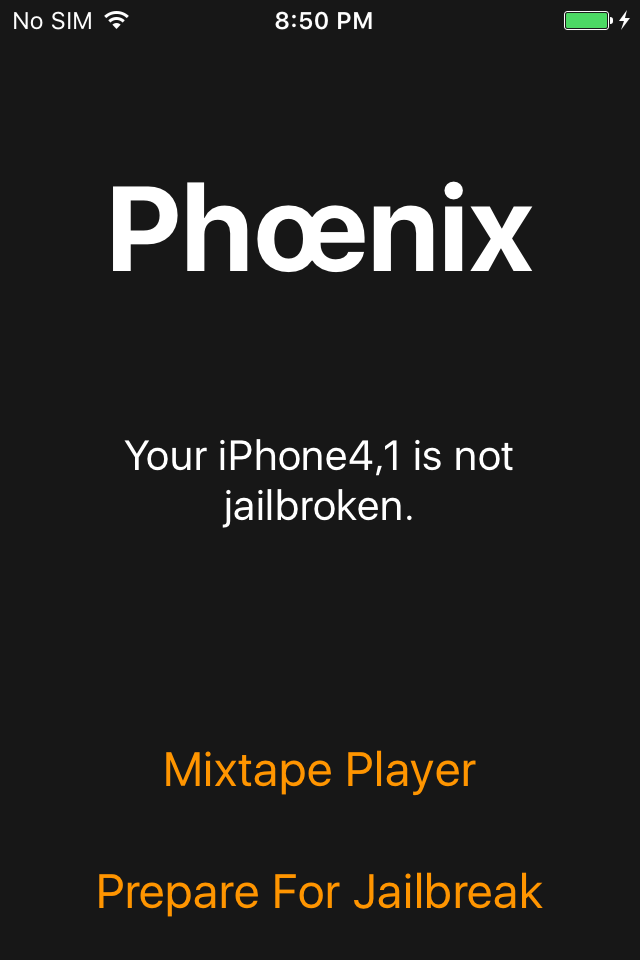
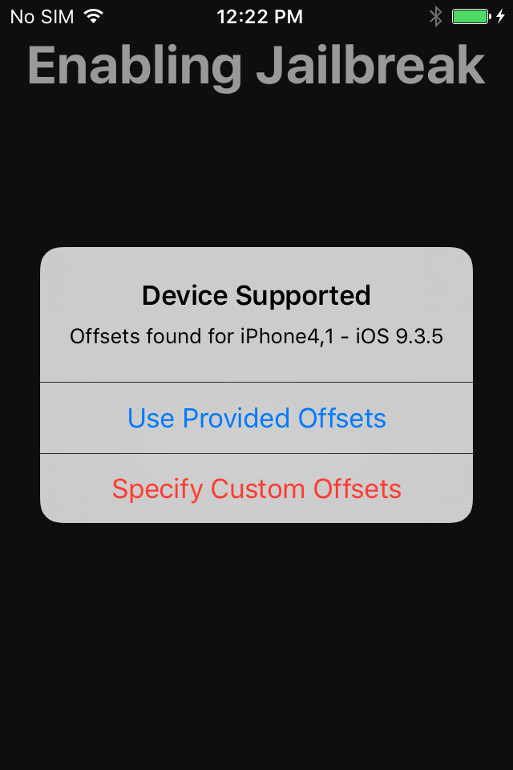
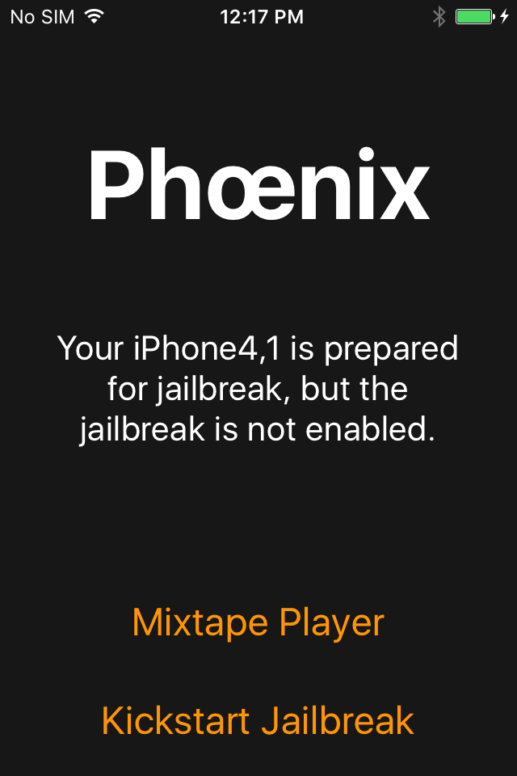

iPhone 4S Jailbreak on iOS 9
| Author: Inepsy | |
| Difficulty: LOW | Category: iOS |
| Time Required: 1 Hour | Index: 000 |
| Published: May. 14th 2022 | Status: Verified |
Introduction
This guide is for iPhone 4S A1387/A1431. All versions of the iPhone 4S have the exact same model number.. if its not A1387 or A1437 its probably not a 4S. You can check here (pay attention to the antenna bands)
NOTICE: This article includes linkes to external programs which may contain malware or other dangerous code.
While in my testing this software or any in this guide have been free from issue
THIS GUIDE AND SOFTWARE IS PROVIDED WITH ABSOLUTELY NO WARRANTY.
Prerequisites
- Computer running Windows 10 or higher
- iPhone 4S running iOS 9.x
- Wi-Fi Connection with Internet
- 30pin Apple 'Dock' Cable
- Sideloadly
- Phoenix Jailbreak
Step 1. Sideloadly Setup
After installing Sideloadly (link available in the prerequisites section above) run it then follow the prompts to fully install.
It should look like this:

Next, type your Apple ID email address into the 'Apple account' field, than drag the 'Phoenix6.ipa' file you downloaded
earlier ontop of the box with the IPA icon.
NOTICE: It is not advised to enter your Apple ID you use for other things.
It should now look like this:

Now click 'Advanced options' -> 'Anisette authentication' -> 'Remote'

Step 2. Sideloading
With Sideloadly staged you can now connect the iPhone 4S to the computer with the included or a reliable
30 pin dock cable into a USB2.0 socket. Click 'Start' than follow the prompts.
Which includes putting in your Apple ID's Password, which SHOULD NOT BE used for anything else.
postwise, should look like this

Step 3. Trust Issues
Because Apple we're gonna need to trust the app. So now on the iPhone navigate to:
'Settings' -> 'General' -> 'Device Management' -> 'Your Apple ID' -> 'Trust' -> 'Trust' on PopUp
Phoenix Jailbreak is now ready for launch!
PITFALL: 'Your Apple ID' is the email you loaded the app with in sideloadly.
Step 4. Actually Running Phoenix
Once trusted go back to the homescreen and launch Phoenix.
You should be greeted with this:

Congratulations! the app is working correctly and we can move on to jailbreaking.
Now you can click
'Prepare For Jailbreak' -> 'Accept'.. uh -> 'Proceed With Jailbreak' -> 'Begin Installation' -> WAIT

PITFALL: It is IMPERATIVE that you wait MORE THAN 5 MINUTES before clicking 'Use Provided Offsets'!
If you dont the iPhone will NOT jailbreak correctly and you will need to restore in iTunes.
After 5 Minutes and only after click 'Use Provided Offsets'.
It will run through the process, if you see a a storage warning click 'Done'
The device will reboot and you're now successfully jailbroken!
Step 5. Kickstarting The Jailbreak
While at this point the iPhone 4S is jailbroken, because Phoenix is a 'Semi-Untethered' jailbreak
when/if the device reboots you will need to kickstart the jailbreak. Just open the app and click 'Kickstart Jailbreak'

PITFALL: And remember to WAIT on this screen for the time stated above in step 4!
Than Phoenix will run through the steps and the device will reboot.
Once done rebooing you will be jailbroken once again and can launch Cydia on the homescreen.